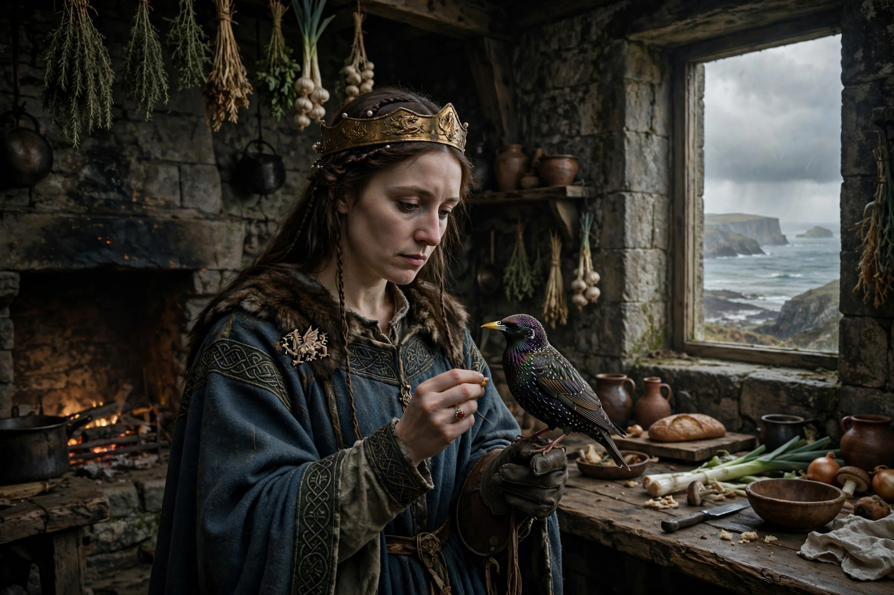

Branwen
Branwen ferch Llŷr ("Branwen, daughter of Llŷr") is a major figure in Welsh mythology, the heroine of the Second Branch of the Mabinogi, Branwen uerch Lyr. She is the sister of Brân the Blessed (Bendigeidfran), king of Britain, and of Manawydan. One of the "Three Golden Shoemakers" of the island in some triads, she is described as one of the three chief ladies of Britain and among the most beautiful women in the world.

| Father | Llŷr |
|---|---|
| Brothers | Brân the Blessed, Manawydan |
| Spouse | Matholwch, king of Ireland |
| Children | Gwern |
| Appears in | Second Branch of the Mabinogi |
Marriage and insult
Branwen is given in marriage to Matholwch, king of Ireland, to forge an alliance. During the wedding feast at Aberffraw, her half-brother Efnysien, enraged at not having been consulted, mutilates the Irish king's horses. Matholwch is placated with gifts, including a magic cauldron that restores slain warriors to life — though without the power of speech.
Mistreatment and the starling
In Ireland, Branwen bears a son, Gwern, but the Irish, still resentful over the insult to the horses, have her banished to the kitchen, where she is struck daily by the butcher. She rears a starling in the kneading-trough, teaches it speech, and sends it across the sea to Britain hidden in a piece of wood, carrying a letter describing her plight.
The war and her death
Brân leads a mighty host to Ireland — so huge he wades across the sea beside his ships, and later lies across the river Linon as a bridge for his army. Peace is made and Gwern proclaimed king, but Efnysien, suspecting treachery, throws Gwern into the fire, and fighting breaks out. The Irish rekindle their dead in the cauldron until Efnysien sacrifices himself to destroy it. Only seven British warriors survive, among them Pryderi and Manawydan, together with Brân's severed head. Of Ireland only five pregnant women remain. Branwen, returned to Wales, dies of a broken heart at Aber Alaw in Anglesey, lamenting that two islands have been laid waste because of her, and is buried in a four-sided grave by the river Alaw.
Legacy
Branwen's grave, Bedd Branwen, is traditionally located in Anglesey; an excavated Bronze Age burial site there bears the name. She remains one of the most tragic figures of Welsh tradition, and the Second Branch is often read as a meditation on the futility of vengeance.
See also
References
- Davies, Sioned (trans.), The Mabinogion, Oxford World's Classics, 2007.
- Sullivan, Charles William (ed.), The Mabinogi: A Facsimile and Bibliography.